Neutralhead-neutral


Todo el material del gato en una página: las ilustraciones originales de la IA y mi versión en pixel art de septiembre de 2026, lado a lado. Las animaciones se reproducen en bucle.
Página interna. Mi versión está retirada (descartado/): no forma parte del kit ni del ZIP de entrega. El encargo para la versión final está en 03-personaje.
Las ilustraciones de la IA tal como se entregaron. Clic para verlas a tamaño completo.
.png)
.png)
.png)
.png)
.png)
A la izquierda, el recorte de la hoja original; a la derecha, mi versión en pixel art a doble resolución.
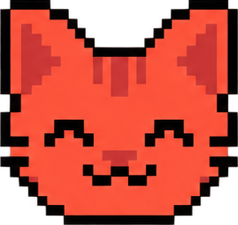


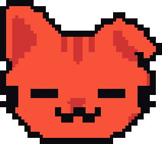

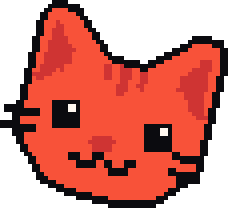
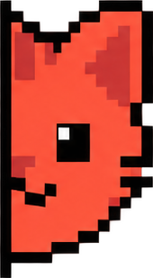

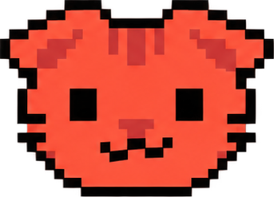


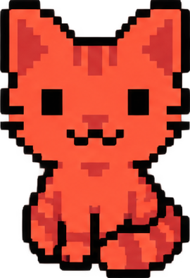
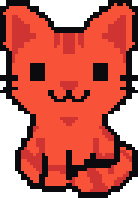


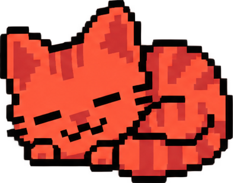
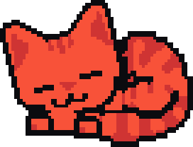

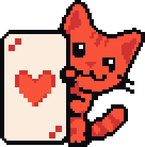


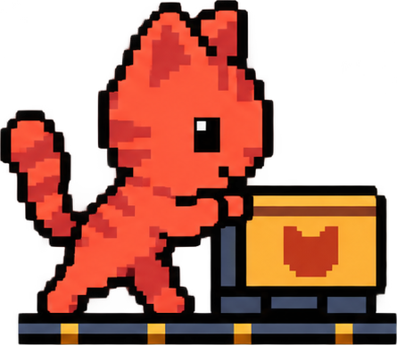

A la izquierda, la secuencia original recortada de las hojas de la IA; a la derecha, mi versión (edición del 25 de septiembre, lienzo de 48 × 44 a media densidad, compuesta con piezas).
Reposo; señal de vida sin distraer
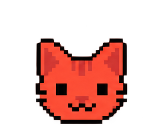
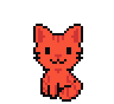
Reposo; reacción mínima a una notificación
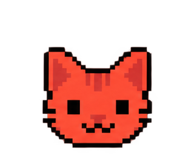

Descubrimiento; invita a explorar

Bienvenida y estados vacíos


Reposo con más presencia; espera amable

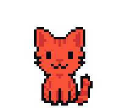
Inactividad o espera larga sin operación en curso


Descubrimiento; algo nuevo por ver

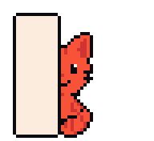
Error recuperable; acompaña un texto claro


Éxito confirmado; una sola vez
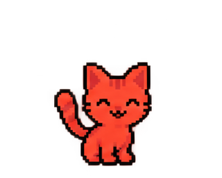

Envío en curso; no indica llegada

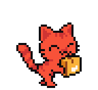
Procesamiento; no indica que el pago llegó

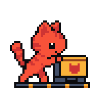
Resultado verificado; mostrar solo con confirmación

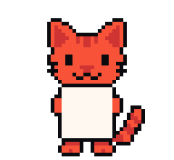
Error recuperable en reparación; texto claro primero


Cambio de activo completado; usar con el estado real

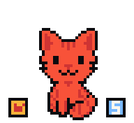
Progreso o ahorro; no anuncia rentabilidad

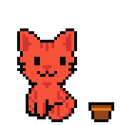
Tarjeta conceptual; no acredita disponibilidad


Búsqueda o revisión; no es sello de auditoría

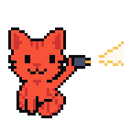
Bienvenida; primer contacto
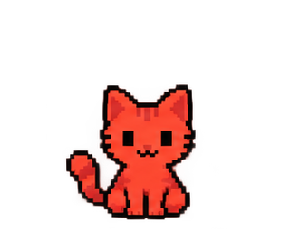

Servicio en mantenimiento; pantalla de excepción
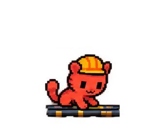

Seguridad de la cuenta; ilustración, no garantía
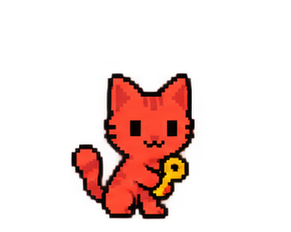
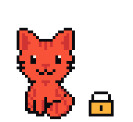